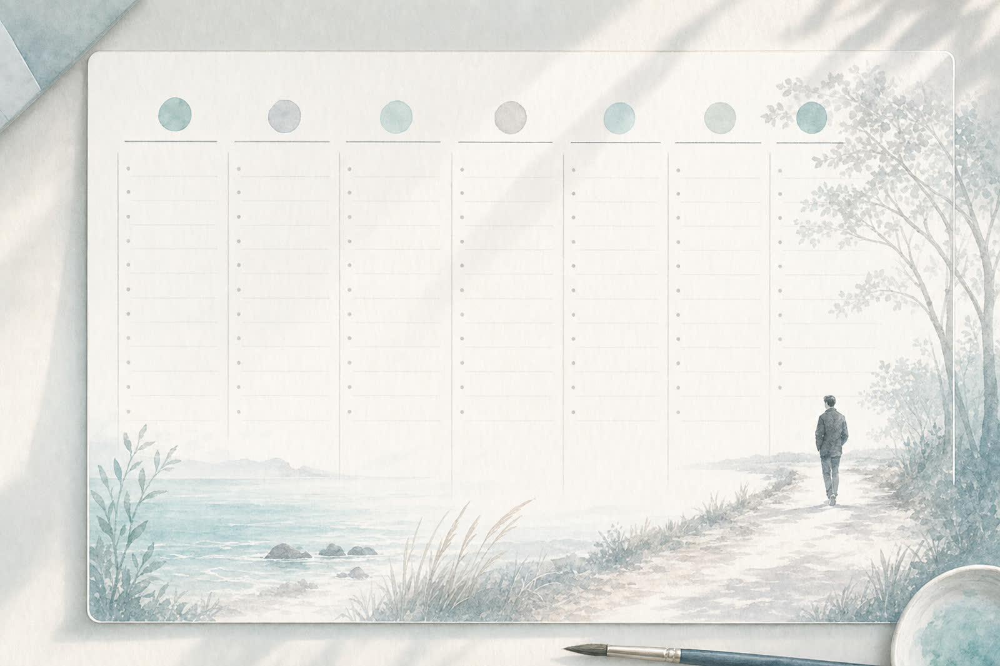

You have named the Big Dread. You have sketched possible futures. Now you choose a direction clearly enough that it can begin to guide your life.
A Big Dream is not a fantasy.
It is a direction your life can move towards.
This guide helps you describe that direction in a way you can carry with you, return to and act on.
You will write it three times: first as a draft, then as a clean paragraph, then as a single sentence you can remember.
Your answers are saved on your device as you go. You can leave and come back.
Pieter and Marietjie are fictional example participants. Their examples are included only to help you if you feel stuck. Use them as a guide, then return to your own life and write what is true for you.
From Guide 2, Pieter chose to develop the future of becoming a healthier business owner who leads through people and systems instead of constant personal rescue.
From Guide 2, Marietjie chose to develop the future of becoming a woman who teaches, writes and facilitates from her own voice while still loving and caring for her family.
This guide uses four practical methods:
You describe a future version of your life in concrete, observable detail.
You check that your direction is genuinely your own, not borrowed or performed for approval.
You name the parts of yourself that come alive when you move in this direction.
You describe the kind of person you are becoming as you live this dream.
A Big Dream is not just a result.
It is a direction, a way of being and a private promise to yourself.
From Guide 2 you chose one future to develop. Write the Big Dream you want to clarify today.
One sentence is enough. You will refine it later.
To become a healthier business owner who leads through people and systems, with energy for my family, my health and my mentoring work.
To become a woman who teaches, writes and facilitates from her own voice while loving and caring for her family.
A clear Big Dream is not only about work or achievement. It is about a way of living.
Choose the three domains that matter most for this dream.
Then describe how your Big Dream shows up in each.
Work / business / calling: leading the business through people and systems instead of personal rescue.
Health and energy: rebuilding strength, sleep and stamina so I am not running on adrenaline.
Closest relationships: being emotionally present, available and patient with my wife and children.
Work / business / calling: teaching, writing and facilitating from my own voice.
Inner life: rebuilding a sense of selfhood that is not built on performing for others.
Closest relationships: being a present mother who is also a whole person, not just a role.
A vague dream cannot guide you.
An observable dream can. Describe what your life actually looks like when you are living this Big Dream.

A normal week: mornings start calmly, I move my body, I meet with my team weekly instead of rescuing every problem, evenings are with my family, weekends are protected.
I have stopped tolerating: constant availability, rescuing every problem, scattered attention, my body being treated like a rented machine.
I take care of: my body, my team, my family, my own thinking time.
A normal week: I teach with focus, I write two mornings a week, I rest properly on Sundays, I have one honest conversation with my husband each week.
I have stopped tolerating: being last on my own list, performing for approval, resentment as my baseline.
I take care of: my voice, my creative practice, my marriage, my friendships, my own rest.
A Big Dream that does not connect to meaning becomes another performance.
The meaning filter helps you find the values and identity underneath the dream.
What comes alive: leadership, courage, my role as father.
The person I am becoming: calmer, more present, more disciplined, more rested.
Matters because: I want to be a father my children remember as present, not absent.
Who benefits: my family, my team, the young entrepreneurs I will mentor.
What comes alive: my voice, my creativity, my honesty.
The person I am becoming: braver, more honest, more creative.
Matters because: I do not want to disappear into usefulness.
Who benefits: my marriage, my children, the women I will eventually teach.
Score each statement from 1 (not at all) to 5 (completely true).
Trust your first instinct. There is no right answer.
A score of 28 or more suggests the dream is well aligned with who you are becoming. A lower score is information, not a failure. You may want to adjust the dream, or notice which statements you scored low and ask why.
Now bring it together. Write three short paragraphs.
You will tidy these into a clean version on the next screen.
Direction: I am becoming a healthier business owner who leads through people and systems.
Observable life: calm mornings, weekly leadership meetings instead of constant rescue, protected family evenings, regular exercise, real rest on weekends, time for mentoring.
Meaning: this matters because I want to be present with my family and useful to others without losing my health, my joy or my faith.
Direction: I am becoming a woman who teaches, writes and facilitates from her own voice.
Observable life: two writing mornings a week, focused teaching, real Sundays of rest, honest conversations with my husband, friendships with depth.
Meaning: this matters because I do not want to disappear into usefulness; I want my children to see a mother who is alive, creative and honest.
Write your Big Dream as a single, clean paragraph in your own voice.
Read it aloud once. If it feels stiff or borrowed, soften it.
My Big Dream is to become a healthier business owner who leads through people and systems instead of personal rescue, so that my family, my health and my mentoring work all have space in my life. I want calm mornings, protected family evenings and a body and mind that can carry me into my fifties.
My Big Dream is to become a woman who teaches, writes and facilitates from her own voice, while loving and caring for my family. I want to write each week, to teach with focus and joy, to be present in my marriage and motherhood, and to stop disappearing into other people's needs.
Reduce your Big Dream to a single sentence you can carry with you and return to.
This is the sentence you will live with.
I am becoming a present father, a healthier owner and a calm leader of my own life.
I am becoming a woman with her own voice, a teacher, a writer and a present mother.
Read your one-sentence Big Dream. Then ask:
If yes, take it into Guide 4.
If not, return to the previous steps and keep softening the language until the sentence feels true.
A clear Big Dream changes the shape of your day.
Much love,
Francois
Your reflection is saved on this device. No one else can see it.